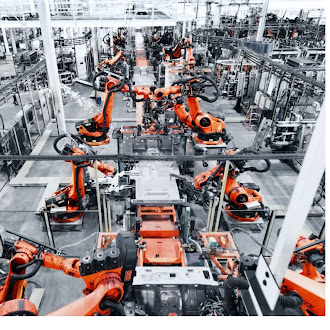

Página Principal
Nos últimos anos, a robótica industrial se tornou um dos pilares da modernização das fábricas em todo o mundo. A busca por processos produtivos mais rápidos, seguros e de qualidade elevou o uso de robôs a um novo patamar, transformando a forma como bens são fabricados. Esse movimento está diretamente ligado à Indústria 4.0, que combina automação, inteligência artificial e integração digital para criar ambientes de produção inteligentes e altamente eficientes.
Dentro desse cenário, os robôs industriais passaram de ferramentas experimentais para protagonistas da produção global. Eles são capazes de executar tarefas repetitivas, trabalhar em ambientes hostis e garantir precisão constante, reduzindo custos e aumentando a competitividade das empresas. Além disso, surgiram os chamados robôs colaborativos, ou cobots, que permitem a interação direta com os operadores humanos de forma segura e eficiente.
Entre os robôs industriais de destaque, está a linha KUKA, desenvolvida por uma das empresas mais tradicionais do setor. Reconhecidos pela força, precisão e durabilidade, os robôs KUKA são amplamente utilizados em processos como soldagem, pintura e movimentação de materiais em grandes fábricas, especialmente no setor automotivo. Eles representam a robustez da automação tradicional, voltada para tarefas intensas e contínuas.

Por outro lado, a Universal Robots trouxe uma revolução ao apresentar os robôs colaborativos. Seu modelo UR3e, por exemplo, é compacto, leve e flexível, ideal para pequenas e médias empresas. Ele pode ser programado de forma simples e trabalha lado a lado com operadores, sem a necessidade de barreiras de segurança, graças aos sensores que interrompem suas atividades diante de qualquer risco de colisão. Isso mostra como a robótica deixou de ser exclusiva das grandes indústrias e passou a ser acessível a diferentes negócios.
Dessa forma, tanto os robôs industriais tradicionais, como o KUKA, quanto os colaborativos, como o UR3e, ilustram dois caminhos complementares da automação: a força da máquina pesada e a versatilidade do robô colaborativo. Juntos, eles moldam o futuro da manufatura moderna e reforçam a importância da tecnologia no crescimento econômico e na inovação.
Abaixo, o mapa de origem da Universal Robots (Odense, Dinamarca):